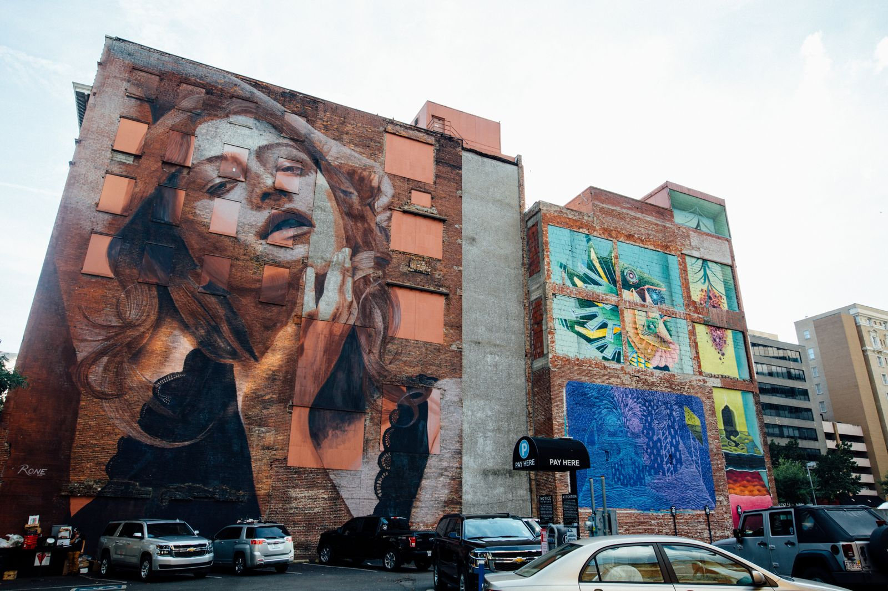

WALL 041The Heron Returns
A grey heron the full length of a railway underpass that floods every winter — painted in a mineral system that lets the concrete breathe instead of blistering. Full case file on the projects page.
- Location
- Railway underpass, Bristol
- Dimensions
- 22 × 3.2 m · 70 m²
- Surface
- Cast concrete, damp
- Paint system
- Silicate mineral, 2 coats
- Year
- 2024
- Permission
- Council programme
